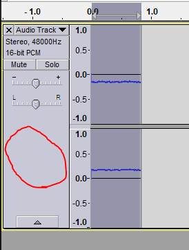
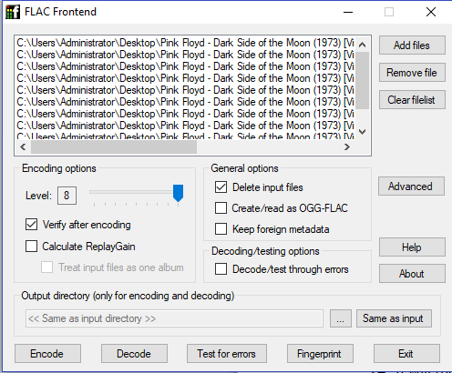
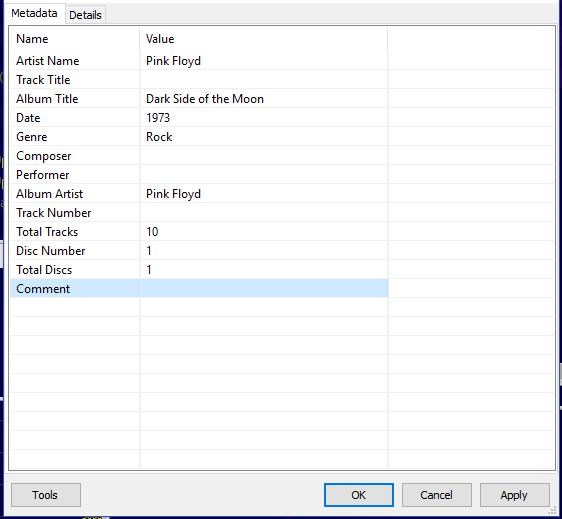
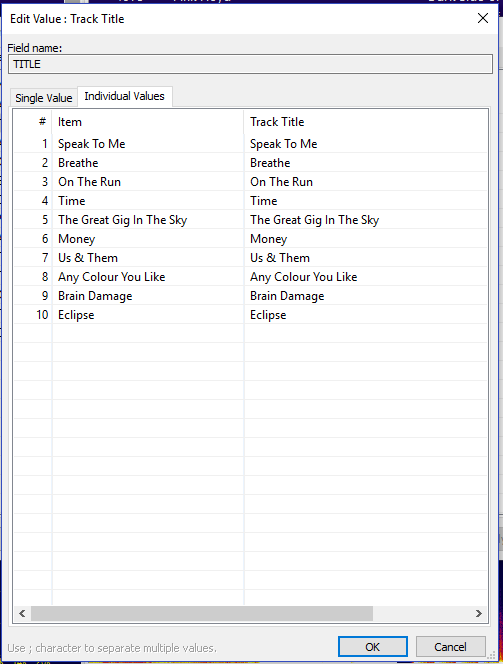
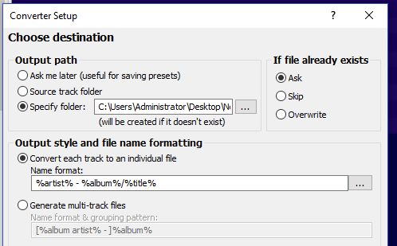
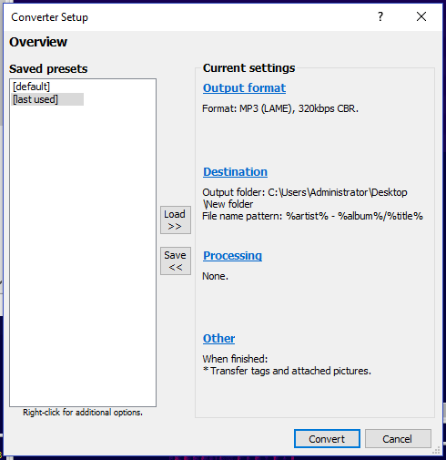

[1.]{.c3}[ ]{.c1}[Open up Audacity]{.c2}
[2.]{.c3}[ ]{.c1}[Make sure the "Recording Volume" is set to around 0.80 ]{.c2}
[}]{style="overflow: hidden; display: inline-block; margin: 0.00px 0.00px; border: 0.00px solid #000000; transform: rotate(0.00rad) translateZ(0px); -webkit-transform: rotate(0.00rad) translateZ(0px); width: 337.00px; height: 66.00px;"
[]{.c2}
[3.]{.c3}[ ]{.c1}[Hit the "Record" button]{.c2}
[4.]{.c3}[ ]{.c1}[Drop that needle on Side 1 yo]{.c2}
[5.]{.c3}[ ]{.c1}[Listen to Side 1]{.c2}
[6.]{.c3}[ ]{.c1}[Once Side 1 is finished, hit the "Stop" button]{.c2}
[7.]{.c3}[ ]{.c1}[Open a new file in Audacity (File -> New)]{.c2}
[8.]{.c3}[ ]{.c1}[Hit the "Record" button]{.c2}
[9.]{.c3}[ ]{.c1}[Drop that needle on Side 2 yo]{.c2}
[10.]{.c3}[ ]{.c1}[Listen to Side 2]{.c2}
[11.]{.c3}[ ]{.c1}[Once Side 2 is finished, hit the "Stop" button]{.c2}
[12.]{.c3}[ ]{.c1}[Head back to your Side 1 recording]{.c2}
[13.]{.c3}[ ]{.c1}[Zoom in on the track so you can find right where the first track starts to play. ]{.c2}
[14.]{.c3}[ ]{.c1}[Add new "Labels" at the start of each track with the track number (two-digit format) and the name of the track.]{.c2}
[(For example, if it were Dark Side of the Moon: 01 Speak To Me, 02 Breathe, 03 On The Run, 04 Time, and so on for the rest)]{.c2}
[To do this, right at the spot before the first track starts to play, click on that exact spot in the track, then go to Tracks -> Add Label at Selection (or just hit Ctrl + B on the keyboard) and type in the track number and name like the example above. Then, find the spot right before the second track starts to play, and do the same for that one too, and so on for the rest of the tracks.]{.c2}
[15.]{.c3}[ ]{.c1}[ Do this for every track on Side 1]{.c2}
[16.]{.c3}[ ]{.c1}[Once all of the track labels have been added, cut out the beginning and ending of the track; where the needle was dropped on to it/where the dust cover was closed and where the needle moved into the center of the vinyl. ]{.c2}
[]{.c2}
[These parts can sometimes be kind of loud, and we\'re going to be amplifying the volume soon, so we don\'t want those parts to interfere with the overall volume of the music. Just highlight those areas by clicking and dragging the mouse over it, and then hit the scissors button (or CTRL + X). ]{.c2}
[]{.c2}
[So, in this example image below, let\'s say that this was the start of the track, and the area with the higher waveforms was the spot where the needle came down and the dust cover was closed, just highlight that like shown and hit the scissors button (or CTRL + X). ]{.c2}
[ }]{style="overflow: hidden; display: inline-block; margin: 0.00px 0.00px; border: 0.00px solid #000000; transform: rotate(0.00rad) translateZ(0px); -webkit-transform: rotate(0.00rad) translateZ(0px); width: 624.00px; height: 198.67px;"
}]{style="overflow: hidden; display: inline-block; margin: 0.00px 0.00px; border: 0.00px solid #000000; transform: rotate(0.00rad) translateZ(0px); -webkit-transform: rotate(0.00rad) translateZ(0px); width: 624.00px; height: 198.67px;"
[]{.c2}
[Then do the same thing but for the ending of the whole track, where the needle went into the center of the vinyl. So in the example image, let\'s say the spot where the waveform is higher was the ending of the last track, and then we highlighted and cut out the part where the needle moved on to the center at the end.]{.c2}
[ }]{style="overflow: hidden; display: inline-block; margin: 0.00px 0.00px; border: 0.00px solid #000000; transform: rotate(0.00rad) translateZ(0px); -webkit-transform: rotate(0.00rad) translateZ(0px); width: 624.00px; height: 190.67px;"
}]{style="overflow: hidden; display: inline-block; margin: 0.00px 0.00px; border: 0.00px solid #000000; transform: rotate(0.00rad) translateZ(0px); -webkit-transform: rotate(0.00rad) translateZ(0px); width: 624.00px; height: 190.67px;"
[]{.c2}
[Next, after those spots are cut out, highlight the whole Side 1 track by clicking on this area: ]{.c2}
[}]{style="overflow: hidden; display: inline-block; margin: 0.00px 0.00px; border: 0.00px solid #000000; transform: rotate(0.00rad) translateZ(0px); -webkit-transform: rotate(0.00rad) translateZ(0px); width: 187.09px; height: 246.50px;"
[]{.c2}
[17.]{.c3}[ ]{.c1}[Now go into Effect -> Normalize, make sure that only the top box is checked in the window that pops up, and hit "OK".]{.c2}
[18.]{.c3}[ ]{.c1}[Now, with the Side 1 track still fully highlighted, go into Effect -> Click Removal, and hit "OK" on the window that pops up]{.c2}
[19.]{.c3}[ ]{.c1}[Next, with the Side 1 track still fully highlighted, go to Effect -> Amplify, and change the "Amplification (dB)" value to -0.1 (negative 0.1). This will increase the volume on the track since we record it at a lower volume to avoid clipping.]{.c2}
[]{.c2}
[20.]{.c3}[ ]{.c1}[Now repeat steps 13-19 on the Side 2 track as well]{.c2}
[]{.c2}
[21.]{.c3}[ ]{.c1}[Next, make a new folder in your Vinyl Rips folder that has the following naming format: ]{.c2}
[Artist -- Album (Original Release Year) [Vinyl-FLAC] {Release Year(if different from original release year) -- Country of Origin(if necessary to distinguish from other releases) -- Record Label -- Catalog Number}]{.c2}
[]{.c2}
[So, using Dark Side of the Moon again as an example: ]{.c2}
[Pink Floyd -- Dark Side of the Moon (1973) [Vinyl-FLAC] {Harvest -- SMAS-11163}]{.c2}
[]{.c2}
[Or, if it was a remastered version from later:]{.c2}
[Pink Floyd -- Dark Side of the Moon (1973) [Vinyl-FLAC] {2016 Remastered -- US -- Pink Floyd Records -- PFRLP8}]{.c2}
[]{.c2}
[I know this seems complicated and pedantic, but it's worth it to have all of that info there.]{.c2}
[]{.c2}
[22.]{.c3}[ ]{.c1}[Now, back in Audacity, go back to your Side 1 Track, and go to File -> Export Multiple.]{.c2}
[23.]{.c3}[ ]{.c1}[Set the folder to the new one you just made by hitting the "Choose" button, and then make sure the other settings look like this (they should already be like this, but just to make sure):]{.c2}
[ }]{style="overflow: hidden; display: inline-block; margin: 0.00px 0.00px; border: 0.00px solid #000000; transform: rotate(0.00rad) translateZ(0px); -webkit-transform: rotate(0.00rad) translateZ(0px); width: 458.50px; height: 290.80px;"
}]{style="overflow: hidden; display: inline-block; margin: 0.00px 0.00px; border: 0.00px solid #000000; transform: rotate(0.00rad) translateZ(0px); -webkit-transform: rotate(0.00rad) translateZ(0px); width: 458.50px; height: 290.80px;"
[]{.c2}
[24.]{.c3}[ ]{.c1}[It will then show up with other windows that try to get you to add tags for each track. Just click "OK" on each of those windows without entering anything, we add tags later in the process.]{.c2}
[25.]{.c3}[ ]{.c1}[Now repeat steps 22-24 for the Side 2 Track.]{.c2}
[26.]{.c3}[ ]{.c1}[Next, head to that folder you exported the tracks to, and you should see each track sitting in there with filenames that correspond to the Labels that you added earlier in the process.]{.c2}
[27.]{.c3}[ ]{.c1}[Go ahead and open up the "FLAC Frontend" program now from your start menu.]{.c2}
[28.]{.c3}[ ]{.c1}[Drag and drop all of the files in your folder into the FLAC Frontend program (into the white space towards the top)]{.c2}
[29.]{.c3}[ ]{.c1}[Next, change the following two settings: ]{.c2}
[Change the "Level" to 8 by dragging the slider all the way to the right.]{.c2}
[Checkmark the "Delete input files" box.]{.c2}
[30.]{.c3}[ ]{.c1}[Your settings should look like this:]{.c2}
[}]{style="overflow: hidden; display: inline-block; margin: 0.00px 0.00px; border: 0.00px solid #000000; transform: rotate(0.00rad) translateZ(0px); -webkit-transform: rotate(0.00rad) translateZ(0px); width: 496.00px; height: 410.00px;"
[]{.c2}
[31.]{.c3}[ ]{.c1}[Now hit the "Encode" button and you\'ll see a command-line window pop up. Let it do its thing. Once it's done, it will say to hit any key to continue, so do that and the command-line window should close out. You will then see that all of the .wav files in the folder have been replaced with .flac files instead. You can now exit out of the FLAC Frontend program.]{.c2}
[32.]{.c3}[ ]{.c1}[Next, we want to add tags to all of these files, and we're going to use Foobar2000 to do that very easily. Drag and drop the files in your folder into a new playlist in Foobar2000.]{.c2}
[33.]{.c3}[ ]{.c1}[Now, highlight all of the tracks, and then right click and choose "Properties"]{.c2}
[]{.c2}
[34.]{.c3}[ ]{.c1}[Fill in all of the relevant fields with the appropriate data, skipping over the track titles and numbers for now. So, using Dark Side of the Moon as an example again, it should look like this:]{.c2}
[}]{style="overflow: hidden; display: inline-block; margin: 0.00px 0.00px; border: 0.00px solid #000000; transform: rotate(0.00rad) translateZ(0px); -webkit-transform: rotate(0.00rad) translateZ(0px); width: 411.50px; height: 380.02px;"
[]{.c2}
[35.]{.c3}[ ]{.c1}[Now, right click on the space next to where it says Track Title, in the "Value" column. Then pick Edit.]{.c2}
[]{.c2}
[]{.c2}
[]{.c2}
[]{.c2}
[]{.c2}
[]{.c2}
[]{.c2}
[]{.c2}
[]{.c2}
[]{.c2}
[]{.c2}
[]{.c2}
[]{.c2}
[]{.c2}
[]{.c2}
[]{.c2}
[]{.c2}
[36.]{.c3}[ ]{.c1}[A new window will pop up with each track and a space to enter in the Track Titles for each one. So, for Dark Side, it would look like this once you fill it out:]{.c2}
[}]{style="overflow: hidden; display: inline-block; margin: 0.00px 0.00px; border: 0.00px solid #000000; transform: rotate(0.00rad) translateZ(0px); -webkit-transform: rotate(0.00rad) translateZ(0px); width: 390.50px; height: 515.41px;"
[]{.c2}
[37.]{.c3}[ ]{.c1}[Now do the same thing for the Track Number value. Fill in the track numbers using a two-digit format (01, 02, 03... 10, 11, 12).]{.c2}
[38.]{.c3}[ ]{.c1}[Once you are all done with those, hit "Apply" and then "OK" on the Properties window, and all of the tracks should now be correctly tagged.]{.c2}
[39.]{.c3}[ ]{.c1}[Next up, search online for an image of the album cover, or if you can't find one, just take a picture of the album with your phone and crop it so it just has the cover.]{.c2}
[40.]{.c3}[ ]{.c1}[Add the cover image to the album's folder and rename the image file to "cover".]{.c2}
[41.]{.c3}[ ]{.c1}[Now, go and grab our "lineage.txt" file and copy and paste it into the folder as well.]{.c2}
[42.]{.c3}[ ]{.c1}[That's all! The ripping process is now complete! ]{.c2}
[]{.c2}
[If you want to convert these files to MP3 so you can easily make a CD, just right click them in Foobar2000, and go to Convert -> \"...\"]{.c2}
[]{.c2}
[Then, click the \"Output Format\" link and make sure it is set to MP3 (LAME) and 320kbps. If it isn\'t, double click on the MP3 part, and then set it to 320kbps by dragging the quality slider all the way up. Then go ahead and hit the back button.]{.c2}
[]{.c2}
[Now, go to the \"Destination\" link. Select \"Specify Folder\" and set it to a new folder on your desktop, you can name this folder whatever you want. Now, make the rest of your settings look like this, including what the "Name format" part says:]{.c2}
[]{.c3}[}]{style="overflow: hidden; display: inline-block; margin: 0.00px 0.00px; border: 0.00px solid #000000; transform: rotate(0.00rad) translateZ(0px); -webkit-transform: rotate(0.00rad) translateZ(0px); width: 409.50px; height: 254.09px;"
[The main \"Converter Setup\" window should now look like this:]{.c2}
[}]{style="overflow: hidden; display: inline-block; margin: 0.00px 0.00px; border: 0.00px solid #000000; transform: rotate(0.00rad) translateZ(0px); -webkit-transform: rotate(0.00rad) translateZ(0px); width: 382.50px; height: 394.21px;"
[Then go ahead and hit the \"Convert\" button and it will convert all of those files into high quality MP3s that you can then use to burn to a CD.]{.c3}